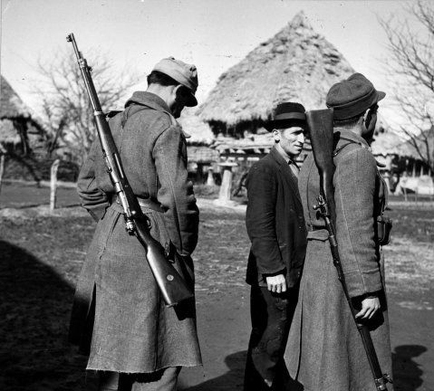

Copyright � Ali Parsa 1998-2020
All rights reserved
A Piece of History
Brno, the Persian Mauser
Hollywood WWII movie buffs know that in such movies while the American guy uses a slick machine gun, the unlucky German soldiers carry a long, clumsy rifle, and usually are either killed before being able to use it or their shots just happen not to hit our hero.
Hollywood's image of the rifle
The gun used by the Wehrmacht was Mauser Kar98k, better known to its many Iranian lovers as Brno. Clumsy? No way. Even after more than a hundred years since its invention it is still sought after by hunters and rifle collectors for its accuracy and reliability. The rough estimates of the number of Mausers manufactured for military use since the last days of the 19th century vary widely, but a conservative estimate is 100 million rifles.
Kar98k
The rifle was invented in Germany by the Mauser brothers. Peter Paul Mauser was born in Oberndorff, Germany in 1838. He and his older brother, Wilhelm, became gun makers, and designed primarily military weapons for the German government. Their finest design, the 1898 Mauser was adopted by the German army and have since been regarded as the best bolt-action design ever. Their ideas can be seen in many sporting (hunting) rifles even today.
The Mauser Brothers
The Mauser 1898, with an overall length of 1250 mm, was issued under the name G98 (for Gewehr 98, meaning rifle model 1898) for the German army.
Mauser G98
Soon other countries, anticipating the Great War in a time that was called 'Armed Peace', adopted this well designed bolt-action rifle for their armies. Different Mauser rifles and clones have been made in virtually every industrialized country in the world, either via licensing agreements with the Mauser factory in Orberndorf, Germany or licencing from copy makers in Czechoslovakia and even simple piracy of the design. Good-quality clones of the '98 have been made in, or manufactured for, Spain, Sweden, Czechoslovakia, Peru, Persia, Belgium, Turkey, Mexico, Argentina, Brazil, Yugoslavia, and Venezuela. Even some models of the American Springfield and the British Lee-Enfield used this design.
At almost the same time that Mauser firearms were introduced, they found their way into Iran. Looking at pictures of Iran's Constitutional Revolution era, one can spot Mauser rifles and handguns in the hands of freedom fighters of Sattar khan and Bagher khan, as well as other Constitutionalists in different regions of Iran.
Iranain Constitutionalists, with their Mausers, in 1906
At the end of World War I, and as a result of the Versailles treaty arms ban, Germany no longer produced these rifles, but an almost exact copy was in production in Czechoslovakia. After Hitler became the German chancellor, the production was resumed in Germany.
Hitler resumed production of Mausers in Germany
Later, with the invasion of Czechoslovakia, the identical rifle was produced in Germany and Czechoslovakia.
Czechoslovak Army Drill, 1938
A major production center was in Brünn, or Brno, as the city is called in the Czech language. The rifles made in Brno, the Czechoslovakian model, are known as VZ24 (for Vzor24, or model24 in Czech language) and had the word Brno imprinted on them.
Czechoslovakian VZ24
Markings of a VZ24
Officially, the Mauser rifle was selected for the Iranian army during Reza shah's time. But Iran didn't go for the original German and ordered the identical Czechoslovakian version, the so-called Brno. The Czech firm provided Iran rifles made of many German parts. It was similar to the long version German known as G98. Some official test results are available from antique arms dealers today, featuring signatures of the Brno factory representative, the Iranian in charge, and of course, satisfactory 'grouping' or bullet marks.
A 1934 test result document
Full length 'Brno' with markings in Persian
At that time two other rifles were in use and very well known in Iran: the British Lee-Enfield and the Russian Mosin-Nagant (Noghaan, or Naaghaan, (نوغان- ناغان) in popular parlance in those days). The exact reason for preferring Brno over its rivals is not known, but one can speculate that those in charge of the Iranian army, or maybe Reza shah himself, tried to avoid dependence of Iran to either of the two neighboring powers. Besides, Brno was considered to be the best military rifle of its day.
The Iranian government ordered three sizes of this weapon. It was manufactured in Czechoslovakia by two firms. One was called Ceskoslovenska Zbrojovka, or CZ. These rifles are known to collectors as Persian CZ98, Persian Mauser or Persian Brno.
A Pahlavi crown, lion and sun crest appears near the feeding ring, as an inscription in Persian (in Nasta'liq script) on the side of its magazine giving the model and the factory name, which was in Brno. From then on the name Brno was used by Iranians to refer to this rifle.
Lion and Sun crest of a Persian Mauser
Persian markings of a Brno made rifle
One typical such inscription read "tofang-e nemoone 1309 karkhane-ye aslahe sazi berno" ("Rifle model 1309 Made at Brno Arms factory." The number 1309 refers to the Persian year 1309which is the year 1930 in the Western calendar).
In the late 1940s Iran's Taslihat-e Artesh (Arms Factories of the Army), popularly known as Mosalsal-sazi (the machine-gun factory), in Tehran started production of these Brno rifles. The needed machinery and know how was provided to Iran through the industrial firm Škoda, which had a long history of cooperation with Iran. Iran produced two models: the regular VZ24 rifle (similar to the German Kar98k, overall length 1110 mm) and the short version (similar to the German G30, overall length 993 mm) known as "Berno kootah" (short Brno).
Berno Kootah (short Brno)
under a licence from CZ. Th The difference was only in the markings on the side of magazine: instead of naming Brno as the maker, it was written "sakht-e aslah-e sazi-e artesh" (made by the Army arms factory).
Markings on an Iran made short Brno
The products are known among the collectors as Persian Mauser and are regarded to be the best and smoothest of the Mauser family of bolt-action rifles.
For many years Brno was the standard personal weapon of the Iranian armed forces, until it was replaced by the more modern, semi-automatic, American Garand M1, and later by the German Heckler & Koch G3.
The rifle was especially chrished by Iranian tribes, who are known to be gun lovers and able shooters. A tribesman sharpshooter would settle for nothing less than a Brno. Tribal rebels did everything to acquire one of these rifles, and they did get their hands on these in many tribal wars during Reza shah and Mohammad Reza shah's time. And probably the tribal chieftains, or khans, did get shipments from foreign sources, to be distributed among their savars (mounted fighters). One single event, which contributed to the widespread availability of Brno rifles among the tribes in Iran, was the fall of Reza shah following the invasion of Iran by the Allied forces in 1941. At that time the Iranian army, after a short resistance, was almost disbanded and many people, especially tribesmen, got hold of the Brnos left after the soldiers abandoned the barracks.
There are many stories of the gun's accuracy among the tribes. When Dadshah rebelled against the shah's government in Baluchistan in the 1950s, people said that his wife, Bibi Khatoon, who accompanied him in the mountains, at one occasion, took her Brno and shot a bullet right into the barrel of the gun of a poor gendarme who was aiming at her at a long distance. Its popularity among Iranian tribes was so much that it was mentioned in some of their songs. A version of a well-known Boyer Ahmad song has a refrain that says "Mastom, Mastom, Brno kootah be dastom" (I'm drunk and have a short Brno in my hand).
For the politically minded intellectuals of 1950s nad 1960s, the rifle was a symbol of the shah's repressive rule. It can be seen in the pictures of soldiers attacking house of Dr. Mossageq on the fateful day of 19 August 1953 (the infamous day of the US-British coup d'etas).
Soldiers attacking the house of Dr. Mossadiq, Aug. 1953
Gory pictures of executions of Tudeh party officers in Chitgar shooting range in 1955 shows defiant young officers strapped to the stake minutes before execution, with Brnos present to do the task. When Navab-Safavi, the fundamentalist leader of Fadaiian Islam was arrested, Iranians saw his pictures being transferred to prison under bayoneted Brnos.
Dr. Yazdi, the Tudeh party leader, after arrest in 1953, surrounded by soldiers with Brnos
Navab-Safavi, the Fadaiian-e Islam leader arrested
You can see it in pictures of 15 Khordad (June 1963) uprizing in Tehran. In fact, when the shah's opposition cried against his "rule of the bayonet", it was the sight of these Brnos with their bayonets attached that they were referring to.
Soldiers with bayoneted Brnos during the Martial Law of 1963
Ordinary people usually had their first encounter with the rifle while passing a guard in the street, or when they were (willingly or otherwise) recruited for the military service.

A deserter is taken to military service in a Gilan village, circa 1955
In the 1960s the semi-automatic US made M1 replaced Brno in the Iranian army, and Brno use was confined to the gendarmerie and the game wardens for a while, before it was decommissioned from active use. In the 1970s it was used mainly in ceremonial occasions.
Girl cadets of the police academy in graduation ceremony, circa 1972
Brno was especially favorite among the Iranian tribes. Some of them even named their daughters after the rifle. During the 1979 revolution, the gun re-appeared in the hands of the revolutionaries and tribesmen, who never abandoned their Brnos. When Kurds challenged the newly established Islamic government, they used mostly modern assault rifles. But Brno still had a use: The kurds claimed that with special cartridges that can pierce 2cm of steel, Brno can down aircraft and helicopters.
Kurdish 'Peshmarga's with Brno
Besides the rebels, the Islamic government too had a use for Brno: It was, and is, used in official Friday prayer ceremonies. The speaker is required to have 'the weapon of the day' by his side, according to the tradition of the Prophet (he apparently used a sword).
A friday prayer session, with Brno
The most likely reason for its use in such ceremonies is that it is long enough for the speaker to hold it like a walking stick while he is standing and preaching. The Mauser brothers would have been happy to hear that their rifle would be considered a 'weapon of the day' a century later.
For people of my generation Persian Mauser, or Brno, brings back many bittersweet memories. The coup, the executions, the NoghlAli (Iranian version of GI Joe) with his Brno in a watch-cabin, the pain of being hit by its butt in street demonstrations, the greedy gendarme guy looking for a chicken to steal, the poor poacher in a remote town using the old rifle to feed his family with meat once in a while. You see it in the old newspaper pictures of battles, ceremonies, riots and executions. It is a piece of history.
----------------------------------------------
Some Links:
A note on Sportized Mauser

Copyright � Ali Parsa 1998-2020
All rights reserved